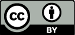

Before you download, this experiment is licensed under the Creative Commons Attribution 4.0 International license and requires that you comply with the following:

You must give appropriate credit, provide a link to the license,
and indicate if changes were made. You may do so in any reasonable manner, but not in any way that suggests the licensor endorses you or your use.
{% for publication in experiment.publications.all %}
{{ publication.citation }} availabe at {{ publication.url }} under CC-BY 4.0 license.
{% endfor %}